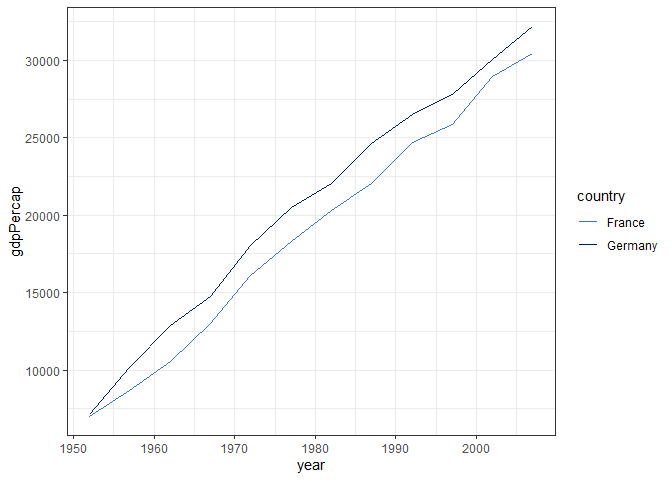

nisracolours provides accessible colour palettes for use in charts. These palettes can be used to style charts created using ggplot2. This is also a basic example package with functions, documentation and a pkgdown website.
Installation
You can install the development version of nisracolours like so:
# install.packages("pak")
pak::pak("nistatisticsresearchagency/nisracolours")Usage
The easiest way to use nisracolours is to use the scale_fill/colour_discrete_nisra() functions:
library(nisracolours)
library(ggplot2)
library(gapminder)
subset(gapminder, country %in% c("Germany", "France")) |>
ggplot(aes(year, gdpPercap, colour = country)) +
geom_line() +
scale_colour_discrete_nisra() +
theme_bw()